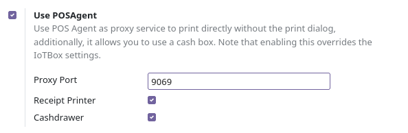

PosAgent Proxy Server for the Odoo Point of Sale
What is POSAgent
POSAgent is a standalone, Desktop (Microsoft Windows currently) application that allows direct receipt print and enables Cash Drawer support for Odoo 14/15/16 Community Edition.
What is Currently supported
- Windows 10/11
- All printers with the OS driver, if you have a printer driver (most cases)
- Thermal ESC/POS Printers (Windows raw printer driver) mainly USB printers
- Cash Drawers - currently only for Windows raw ESC/POS driver
What may be supported in future releases
- STAR Printers for the RAW driver
- More printer drivers (Windows serial port, TCP/IP (network))
- Electronic Scales
- Older Windows Versions/32 bit (if there's demand)
- Enhanced printer output, filters
- Linux version
Features
- Very fast and lightweight, made in native C++
- Very easy to set up, remembers your settings and printer
- Silent, unintrusive, can start in the system tray
Quick start guide
- Install the POSAgent module from the odoo app store (link at the bottom of the page)
- Enable and set up in your Point of Sale configuration area:

- Download the POSAgent desktop client (link)
If everything went well then you should see the following icons in your POS interface:
POSAgent is under active development. You can help this project in the following ways: Suggestions. We're listening to your feedback. Donations via the following channels: